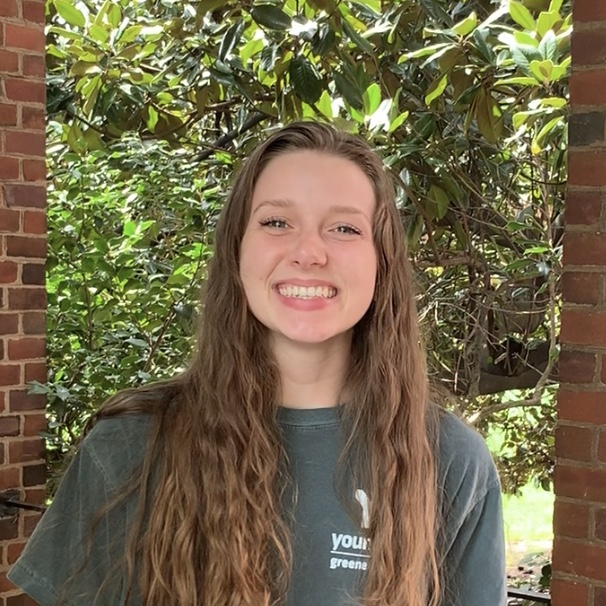

<div class="container-fluid" [ngStyle]="{'margin-top': '25px', 'margin-bottom': '30px'}">
  <div class="centered">
    <h1>About the Shelter</h1>
    <p>Happy Tails Animal Shelter is dedicated to helping save animals in need, and pairing these animals with their
      perfect home in the Charlottesville, VA area. We have animals to match any lifestyle, so visit us at one of our
      adoption events to meet your new best friend. <br><br>
      Founded in 2020, we have been able to rescue and rehome over 200 animals, many of which were previously in
      high-kill shelters. <br><br>
      We are a 501(c)(3) organization and function solely off of volunteer support. If you would like to get involved,
      please visit our Volunteer page to get more information.</p><br>
    <div class="row" style="margin-bottom:95px">
      <div class="col">
        <mat-card class="founders">
          <mat-card-header>
            <mat-card-title>Erin, Co-Founder</mat-card-title>
          </mat-card-header>
          
        </mat-card>
      </div>
      <div class="col">
        <mat-card class="founders">
          <mat-card-header>
            <mat-card-title>Elliot, Co-Founder</mat-card-title>
          </mat-card-header>
          
        </mat-card>
      </div>
    </div>
  </div>
</div>
